直線の表し方にはいろいろありますが、ここでは最初に陰関数表示で考えてみます。 陰関数表示というのはこんな感じ表示方法です。 わかっているとは思いますが、が直線を表わすパラメータです。 この直線と、点Pとの距離を考えてみます。
と、言ってもいきなりこの直線との距離を考えるのは面倒なので、次のような原点を通る直線との距離を考えましょう。 さて、この距離を考える問題ですが、ベクトルの内積を使うと簡単に解けてしまいます。 ベクトル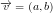、直線上の位置ベクトルを、 点Pの位置ベクトルを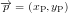としましょう。 そしてこの直線の方程式をよく見ると、内積の形をしており、次のように書き直せます。
ベクトルの内積=0と言うことは2つのベクトルが直交していることを意味します。 したがって、この直線は原点を通りベクトルに直交する直線を表わしています。 図にすると下のようになります。
図から、ベクトルと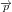の角度をとすると、 点と直線の距離は次のようにかけます。 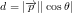 内積の定義を思い出すとさらに 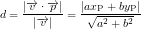 と変形できます。
ここまでの導出は、原点を通る直線限定だったので、任意の直線について考えて見ます。
平行移動し、点位置ベクトルを通るように直線の式を書き直します。
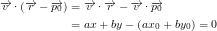
ここで、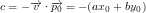とおけば、一番初めの方程式になります。
同様に距離の式も書き直してみます。 の定義に注意すれば、
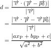
となります。これで、よく教科書に出てくる点と直線の距離の公式が導き出せました。
の定義に注意すれば、
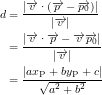
となります。これで、よく教科書に出てくる点と直線の距離の公式が導き出せました。
ちなみに、絶対値をとる前のの符号は、点が直線のどちら側にあるかを表わします。 符号が正ならと同じ側、負なら反対側にあるとわかります。
距離が求まると直線上でもっとも近い点を求めることができます。 求める点を点Hとすると、PHと向きが同じ単位ベクトルは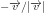とかけます。 このベクトルに点Pと直線の距離を書けると、PHベクトルとなります。これから、点Hの位置ベクトルは 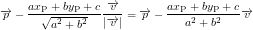 となります。これを成分表示すると、次のようになります。 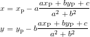
さて、ここまでは陰関数表示で直線の式を表したわけですが、次に、 媒介変数を使ったパラメトリックな表現方法を考えてみます。 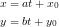 ベクトル表現を使うと次のように表現できます。 この表現方法ならの範囲を指定することによって、線分を作ることができるのでいろいろと便利そうです。
この直線と点の距離を考えてみましょう。 直線と点の関係を図にすると次のようになります。
二次元ベクトルの外積の定義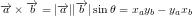 を使うと、距離は次式のようになります。 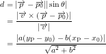
直線上で点Pもっとも近い点を求めることも簡単にできます。 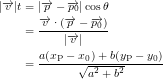 これから、 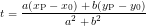 の点が直線上で点Pもっとも近い点になります。 この点と点Pを結べば垂線を引くこともできます。
実際にやってみました。
SVGにJavascriptを埋め込んで簡単なアニメーションを作ってみました。
黒の直線とバツが与えられた直線と点、赤い円が半径=dの円、青い線分が垂線です。
SVGファイルをダウンロードする
{kind=link}